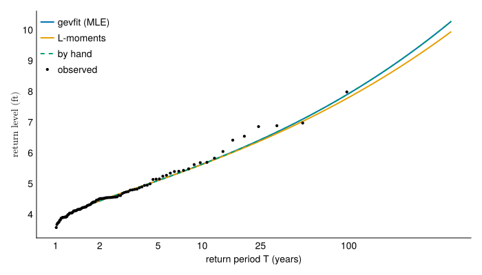
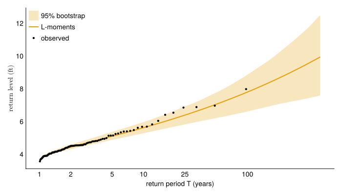
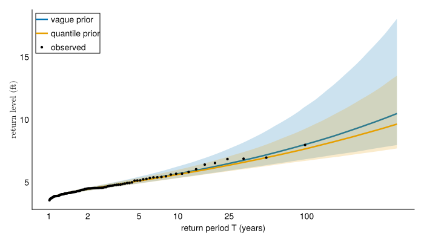

In this lab, you will fit a generalized extreme value (GEV) distribution to annual maximum water levels at a tide gauge by maximum likelihood, by L-moments, and by Bayesian inference, then compare the estimates.
The code below runs end to end on Sewells Point, Virginia. Then you change one line to select a different gauge and rerun it. A different gauge may need different detrending and prior choices.
Objectives
By the end of this lab, you will be able to:
Fit a GEV by maximum likelihood and by L-moments, and say why the two disagree.
Write a GEV log-likelihood from the density and optimize it yourself.
Read a prior predictive simulation and say whether the prior is defensible.
Diagnose a Markov chain that has not converged, and say what to do about it.
Setup
The cell below activates this lab’s own package environment, installs what it lists, and loads the packages. Every lab starts with the same cell. It also creates the random number generator that the rest of the lab draws from, seeded so a fresh render gives the same figures every time.
Four of these packages are new this week.
CEVE543Utils wraps GEV fitting and NOAA data loading for this course
Turing writes Bayesian models and draws from their posteriors (documentation)
Turing stores its output in a FlexiChain, and summarystats is the function that turns one into the table of convergence diagnostics used at the end of this lab.
2
Passed to every function below that draws at random, so the results are reproducible.
Lab activity
The data
load_water_level downloads every hourly reading a NOAA tide gauge has published and caches it beside this notebook. Sewells Point sits in Norfolk, Virginia, at the mouth of Chesapeake Bay, and has reported since 1928.
station ="8638610"record =load_water_level( station; name="Sewells Point", cache=joinpath(@__DIR__, "$station-hourly.csv"),)
1
The line you will change later. Station ids are listed at NOAA’s station browser; pick one with a long record.
2
Where the download is kept. @__DIR__ is this notebook’s own folder, so the cache is found whether you render the notebook or run cells in the REPL. The first download of a century-long record takes a minute or two; every run after that reads the cache in seconds.
WaterLevelRecord: 849657 readings in m
station: Sewells Point (8638610), MSL datum
period: 1928-01-01T00:00:00 to 2026-08-31T23:00:00
levels: -1.504 to 2.032 m
The levels come back with units attached. Unitful attaches units to numbers, so a length cannot be added to a time and unit conversion is a function call rather than a hardcoded factor.
reading = record[1]@printf("%s at %s\n", reading.level, reading.time)@printf("in feet: %s\n", uconvert(u"ft", reading.level))@printf("as a bare number: %.3f\n", ustrip(reading.level))
1
uconvert changes the unit and the number together, so the physical quantity is unchanged.
2
ustrip throws the unit away and hands back the number. Anything that does not understand units, which includes every fitting function in this lab, needs this.
-0.468 m at 1928-01-01T00:00:00
in feet: -1.535433070866142 ft
as a bare number: -0.468
:msl subtracts each year’s mean sea level, leaving the water level above that year’s mean. :linear subtracts an ordinary least squares fit to the maxima instead, and :none leaves the trend in. Try each one.
AnnMaxRecord: 96 years in ft, detrended by :msl
station: Sewells Point (8638610), MSL datum
period: 1928 to 2025
levels: 3.5684841556498657 to 7.9812625776377395 ft
An observed water level is the sum of mean sea level, the astronomical tide, storm surge, and vertical land motion. Sewells Point has both eustatic sea-level rise and subsidence, so its mean sea level rises about 4.6 mm/yr. A stationary GEV requires that every year be drawn from the same distribution, so the trend must be removed first. Subtracting annual mean sea level removes the sea-level component but leaves the tide in the residual. A design study would remove the tide as well.
Two cases need handling. When \(v \le 0\) the observation is outside the support and the density is zero, so the log-density is \(-\infty\). When \(\xi = 0\) the expression divides by zero, but the distribution is the Gumbel there and its log-density is \(-\log\sigma - z - e^{-z}\) with \(z = (y - \mu)/\sigma\).
functionmy_gev_logpdf(y, μ, σ, ξ) σ <=0&&return-Inf z = (y - μ) / σabs(ξ) <1e-7&&return-log(σ) - z -exp(-z) v =1+ ξ * z v <=0&&return-Infreturn-log(σ) - (1+1/ ξ) *log(v) - v^(-1/ ξ)end
1
A negative scale is not a distribution. Returning -Inf instead of raising an error lets the optimizer treat the point as impossible and continue.
2
The Gumbel limit. Testing abs(ξ) < 1e-7 rather than ξ == 0 catches the values an optimizer proposes near zero.
3
The support condition. As \(\mu\), \(\sigma\) and \(\xi\) change, the set of observations with finite density changes.
Now minimize the negative log-likelihood. Optimize over \(\log\sigma\) so the scale stays positive.
If converged prints false, the parameters are not a maximum likelihood estimate and nothing downstream of them is valid. Try a different starting guess or a different algorithm.
Return levels from the three fits
Plot return level against return period, with the observations at Weibull plotting positions.
Sixty return periods from just over 1 year to 500, log-spaced so the short ones do not crowd together.
2
Your hand-fitted parameters, packaged as a distribution so one quantile call works on all three.
3
Sorts the record and pairs each observation with the return period its rank implies.
4
Dashed because your fit and gevfit maximize the same likelihood, so the two curves coincide. The dashed line following the solid one confirms your log-density is correct.
5
The \(T\)-year return level is the quantile with exceedance probability \(1/T\).
6
Log axis with return periods as tick labels.

Figure 2: Return levels from the three fits, with the observed record at Weibull plotting positions.
Bootstrap confidence bands
Each of those curves is one estimate from 96 years of data. A different 96 years from the same process would give different parameters and a different curve. The bootstrap estimates that spread: resample the record with replacement, refit, and repeat.
Bootstrap the L-moment fit rather than the maximum likelihood fit. L-moments are closed form, so every resample returns an estimate. A maximum likelihood fit fails on some resamples, and the fits that survive are a biased subset.
n_boot =1_000boot_fits = [gevfit_lmom(y[rand(rng, 1:length(y), length(y))]) for _ in1:n_boot]boot_curves = [[quantile(d, 1-1/ T) for T in return_periods] for d in boot_fits]
1
Resample length(y) values with replacement, refit, and keep the fitted distribution.
lower = [quantile([c[k] for c in boot_curves], 0.025) for k ineachindex(return_periods)]upper = [quantile([c[k] for c in boot_curves], 0.975) for k ineachindex(return_periods)]fig =Figure(; size=(700, 400))ax =Axis(fig[1, 1]; ylabel=L"\text{return level (ft)}")band!(ax, return_periods, lower, upper; color=(colors[2], 0.25), label="95% bootstrap")lines!( ax, return_periods, [quantile(fit_lmom, 1-1/ T) for T in return_periods]; color=colors[2], linewidth=2, label="L-moments")scatter!(ax, observed_periods, sorted_obs; color=:black, markersize=6, label="observed")return_period_axis!(ax)axislegend(ax; position=:lt)fig
1
band! fills between the two quantile curves.

Figure 3: L-moment fit with a bootstrap 95% confidence band, against the observed record.
for T in (10, 50, 100, 500) levels = [quantile(d, 1-1/ T) for d in boot_fits]@printf("%3d-yr: %.2f [%.2f, %.2f] ft\n", T, quantile(fit_lmom, 1-1/ T),quantile(levels, 0.025), quantile(levels, 0.975))end
10-yr: 5.62 [5.28, 5.96] ft
50-yr: 7.06 [6.21, 7.77] ft
100-yr: 7.80 [6.61, 8.86] ft
500-yr: 9.94 [7.59, 12.50] ft
The band widens with return period, because the far tail is determined by the few largest observations. Compare its width to the gap between the three fits in the previous figure: the disagreement between estimators is small next to the uncertainty within any one of them.
Bayesian estimation
The same model in Turing, with priors so wide they are meant to impose almost nothing. Priors this wide are often called uninformative.
Prior() samples the prior rather than the posterior, which is what makes this a check on the prior alone.
functionreturn_curves(df, periods; n_curves=200) curves =Vector{Vector{Float64}}()for i in1:min(n_curves, nrow(df)) df.σ[i] <=0&&continue d =GeneralizedExtremeValue(df.μ[i], df.σ[i], df.ξ[i]) curve = [quantile(d, 1-1/ T) for T in periods]all(isfinite, curve) &&push!(curves, curve)endreturn curvesendprior_curves =return_curves(prior_df, return_periods)implied_500yr = [last(c) for c in prior_curves]@printf("500-year level implied by the prior:\n")@printf(" median %.3g ft, largest %.3g ft\n", median(implied_500yr), maximum(implied_500yr))
1
Turning each parameter draw into a return-level curve, which is the scale a coastal engineer can judge.
2
A draw with \(\xi\) large enough gives infinite or overflowing quantiles, so those are dropped rather than plotted.
500-year level implied by the prior:
median 381 ft, largest 1.44e+74 ft
Figure 4: Return-level curves implied by the vague prior, before seeing any data. The vertical axis is clipped; many draws run far off the top.
These priors place substantial probability on 500-year water levels of several hundred feet and on negative water levels, neither of which any tide gauge has recorded. The prior is informative about return levels, and what it asserts is wrong.
Quantile priors
The three parameters are hard to reason about jointly, which is why independently reasonable priors on each one produced the curves above. Return levels are easier to judge, so specify the prior in terms of return levels instead. Choose a few return periods, state what you believe about the level at each, and let those statements constrain the parameters.
quantile_beliefs = [ (period=2, belief=Normal(5.0, 1.0)), (period=100, belief=Normal(8.0, 2.5)), (period=500, belief=Normal(9.5, 4.0)),]@modelfunctiongev_quantile(y, beliefs) μ ~Normal(5, 3) σ ~truncated(Normal(0, 2); lower=0.01) ξ ~truncated(Normal(0, 0.2); lower=-0.5, upper=0.5) d =GeneralizedExtremeValue(μ, σ, ξ)for b in beliefs Turing.@addlogprob! logpdf(b.belief, quantile(d, 1-1/ b.period))endfor yᵢ in y Turing.@addlogprob! my_gev_logpdf(yᵢ, μ, σ, ξ)endend
1
Each entry is a belief about one return level: the 2-year level is 5 ft with standard deviation 1 ft, the 100-year level is 8 ft with standard deviation 2.5 ft, and the 500-year level is 9.5 ft with standard deviation 4 ft. These numbers are for Sewells Point. A gauge with a different tidal range needs different ones.
2
Bounding the shape rules out the distributions with no finite variance. This is a strong assumption; revisit it if the posterior for \(\xi\) concentrates near a bound.
3
Each belief contributes its log-density evaluated at the return level the current parameters imply, so parameter sets implying return levels you called implausible receive lower posterior density.
Figure 5: Return-level curves implied by the quantile prior. Compare the vertical scale to the previous figure.
The implied return levels are now physically plausible, and they still span a wide range. A prior predictive check that produces a narrow band means the prior determines the posterior.
Four chains of 1,000 draws, run from different starting points. \(\hat R\) compares chains against each other, so it needs more than one.
2
Target acceptance rate, raised from the default of 0.65. The GEV support depends on the parameters, so the posterior density falls to zero along a boundary that moves with \(\mu\), \(\sigma\) and \(\xi\). At the default step size NUTS crosses that boundary and reports a divergence. A higher target forces smaller steps, which costs a few seconds of runtime. Models whose support depends on their parameters usually need this; most models do not.
What the numbers mean.\(\hat R\) compares the variation within each chain to the variation between chains; at convergence it approaches 1, and anything above 1.01 means the chains have not mixed. The effective sample size is how many independent draws the correlated ones are worth, so 4,000 draws with an ESS of 200 carry the information of 200. Divergences should be as close to zero as possible.
fig =Figure(; size=(700, 400))ax =Axis(fig[1, 1]; ylabel=L"\text{return level (ft)}")for (chain, colour, label) in ((chain_vague, colors[1], "vague prior"), (chain_quantile, colors[2], "quantile prior")) curves =return_curves(DataFrame(chain), return_periods; n_curves=2_000) lo = [quantile([c[k] for c in curves], 0.025) for k ineachindex(return_periods)] hi = [quantile([c[k] for c in curves], 0.975) for k ineachindex(return_periods)] med = [median(c[k] for c in curves) for k ineachindex(return_periods)]band!(ax, return_periods, lo, hi; color=(colour, 0.2))lines!(ax, return_periods, med; color=colour, linewidth=2.5, label=label)endscatter!(ax, observed_periods, sorted_obs; color=:black, markersize=6, label="observed")return_period_axis!(ax)axislegend(ax; position=:lt, framevisible=true)fig
1
The 2.5th and 97.5th percentiles across posterior draws at each return period, which bound the 95% credible interval.

Figure 6: Posterior median return level and 95% credible interval under each prior. Shaded bands are the credible intervals; the observed record is plotted at Weibull plotting positions.
The two posteriors differ most at long return periods, where the data constrain the tail weakly.
functionreturn_level_summary(chain, period) df =DataFrame(chain) levels = [quantile(GeneralizedExtremeValue(df.μ[i], df.σ[i], df.ξ[i]), 1-1/ period) for i in1:nrow(df) ]returnmedian(levels), quantile(levels, 0.025), quantile(levels, 0.975)endfor period in (50, 100, 500) vm, vl, vu =return_level_summary(chain_vague, period) qm, ql, qu =return_level_summary(chain_quantile, period)@printf("%3d-yr vague %5.2f [%5.2f, %6.2f] quantile %5.2f [%5.2f, %6.2f]\n", period, vm, vl, vu, qm, ql, qu )end
1
Every posterior draw is a full parameter vector, so every draw gives a return level. The spread of those levels is the credible interval, and it accounts for uncertainty in all three parameters at once.
You are expected to use an LLM for the code. Write your answers in the Your answer block under each exercise, replacing the italic placeholder. Grading is on the answers.
Change the gauge
Pick a different NOAA tide gauge from the station browser and change station in the data cell near the top. Choose one with at least 50 years of record. Then run the whole notebook from the top.
Report what broke and what you did about it. Work through the notebook in order and say, at each stage, whether the output is still trustworthy: did the hand-written optimizer converge, do the two fits still agree, is \(\hat R\) still close to 1, are there divergences.
The quantile prior’s numbers were chosen for Sewells Point. A gauge with a different tidal range, meaning the difference between high and low tide, needs different ones. Sewells Point has a tidal range of about 2.5 ft and Boston about 9.5 ft, so Boston’s annual maxima exceed the levels this prior calls plausible. Look at your gauge’s record before choosing new numbers, and say what you changed them to and why.
Your answer.
Answer here
The shape parameter
Compare the maximum likelihood, L-moment, and hand-optimized estimates on your gauge. Report all three.
They should agree closely on \(\mu\) and \(\sigma\) and less closely on \(\xi\). Explain why \(\xi\) is the least well determined, and say which of the three you would report to a client and why.
Your answer.
Answer here
Sensitivity to the prior
Compare the 500-year return level and its credible interval under the two priors on your gauge.
The vague prior is sometimes described as letting the data speak for themselves. Using your prior predictive figures and your posterior intervals, say whether that description holds here.
Your answer.
Answer here
Reading a failed diagnostic
Suppose a colleague sends you this notebook, run on their own gauge, with \(\hat R = 1.08\) on \(\xi\) and 47 divergences, and asks whether the 100-year level in the summary is usable.
Write your reply. Say what the two numbers mean, whether the estimate can be used, and what you would ask them to try.
Your answer.
Answer here
Reporting a design value
Report one 100-year return level for your gauge, with one interval, as you would for a report a city will act on.
State the number and say what it rests on: which estimator, which detrending choice, which prior, and what you would want before trusting it further.
Your answer.
Answer here
Turning it in
This lab is due on Canvas one week after the Friday session that starts it.
Check that every Your answer block is filled in.
Render the notebook to a PDF. In the terminal, from the lab folder, run:
quarto render index.qmd --to typst
This writes index.pdf beside the notebook. It runs the whole notebook from the top in a fresh process, so it also confirms your work does not depend on leftover REPL state.
Commit and push your work, with GitHub Desktop or by asking Claude to commit and push.
Upload index.pdf to the Lab 4 assignment on Canvas.
Paste the link to your repository in the same Canvas submission.
If the render fails and you cannot fix it, upload what you have and say where it broke. A lab that does not render is worth more to me than a lab you did not turn in.
Note what broke, what Claude got wrong, and what you had to fix by hand, and bring it to the next session.